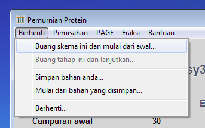
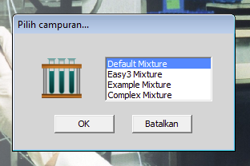
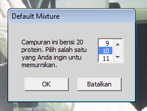
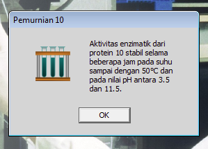
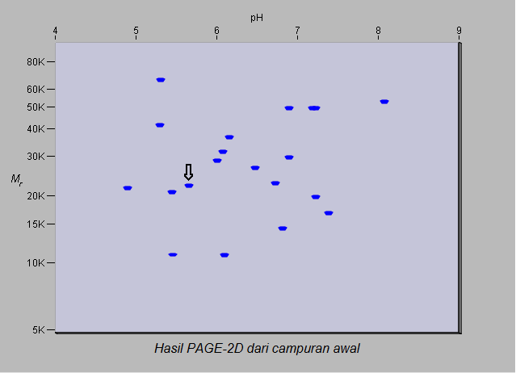

kembali ke awalnya
latihan sebelumnya
latihan berikutnya
kembali ke awalnya
latihan sebelumnya
latihan berikutnya Latihan 5 dari 6
Pemurnian Protein dari Campuran Protein yang Lebih Banyak
Jika anda sudah berhasil memurnikan protein 2 dari campuran tiga protein maka anda sudah siap mencoba memurnikan protein dari campuran dua puluh protein.

Klik pada kata Berhenti di baris abu-abu dan pilih Buang skema ini dan mulai dari awal.

Pilih campuran protein yang disebut Default_Mixture.
Campuran ini mengandung 20 protein.

Coba murnikan protein 10.


Jika anda memeriksa campuran ini dengan elektroforesis-2D, hasilnya seperti yang terlihat di atas. Noda yang ditunjukkan dengan panah merupakan protein 10. Jangan lupa bahwa berat molekul adalah berat molekul subunit-nya. Namun, informasi yang dapat diperoleh dari gel ini mungkin bisa menolong anda membuat rencana atau skema untuk pemurnian protein 10. Silahkan mencobanya! Dan terus lakukan percobaan! Jika suatu metode tidak berhasil, coba mengerti alasannya dan lanjutkan dengan sesuatu yang berbeda. Ingatlah bahwa anda hanya dapat membuang suatu tahap jika anda belum menggabungkan fraksi, setelah fraksi digabung maka anda harus buang skemanya dan pilih campurannya lagi.
Pemurnian protein 10 seharusnya tidak memerlukan lebih dari dua tahap. Jika anda dapat memurnikannya dengan demikian, cobalah memurnikan protein lain dari campuran ini. Ada yang mudah dimurnikan, ada juga yang agak sulit dimurnikan. Anda boleh memakai metode apa saja dari metode yang tersedia, tapi anda harus melakukan percobaan secara sistematis dan realistis. Perhatikan biayanya! Kegiatan anda diperhatikan dan dapat dihentikan jika anda memakai bahan dan waktu berlebih-lebihan.
Sekarang anda seharusnya sudah menguasai program ini begitu juga dengan cara memilih campuran protein tertentu dan cara memakai metode yang tersedia. Sebelum anda selesai dengan seluruh latihan ini, coba satu percobaan terakhir.